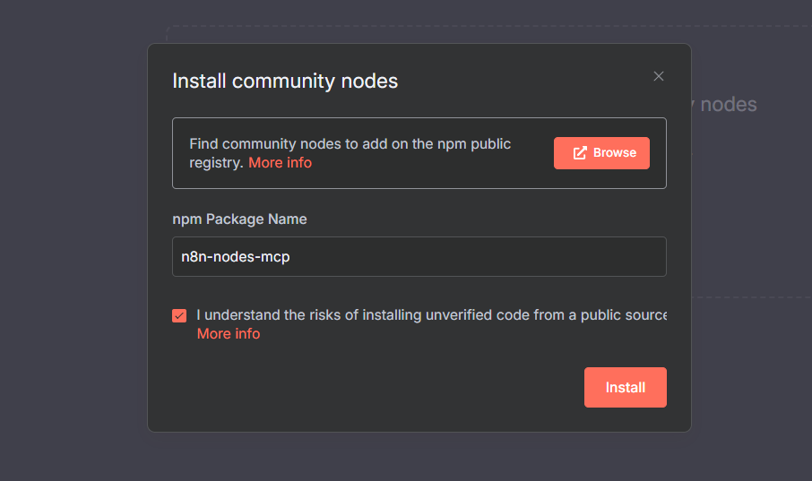
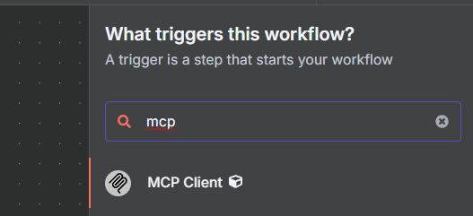
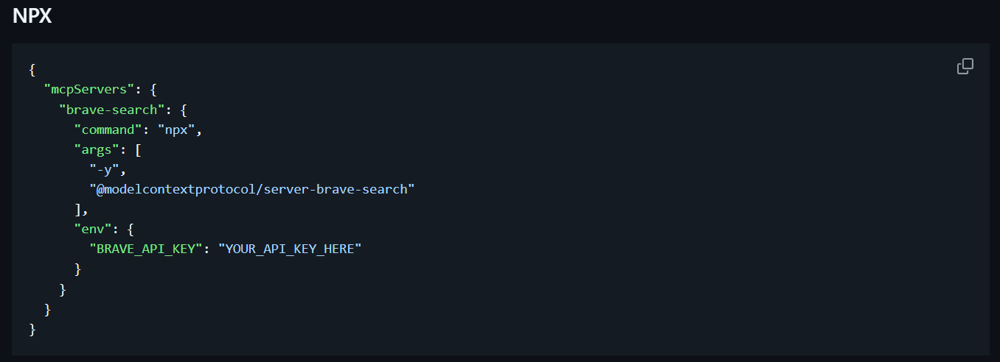
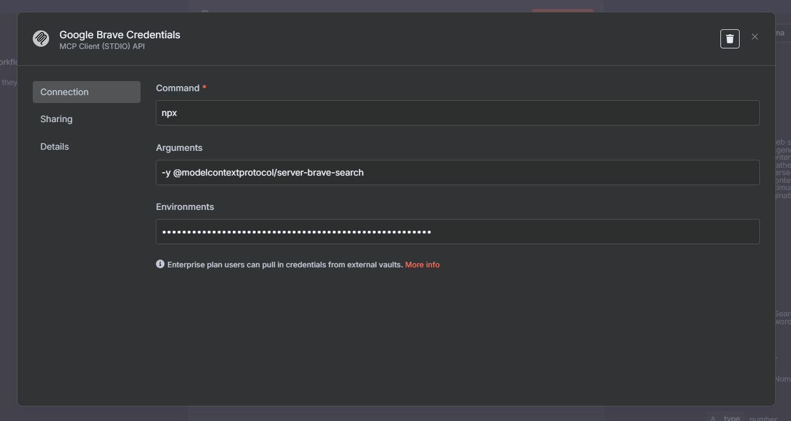
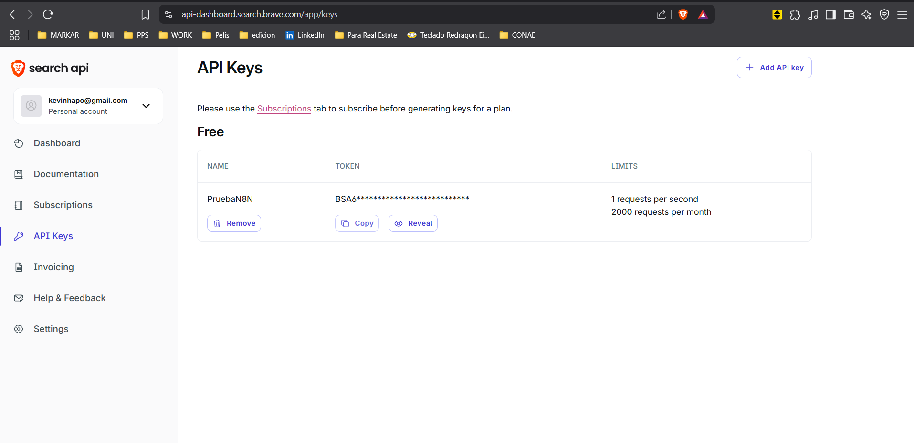
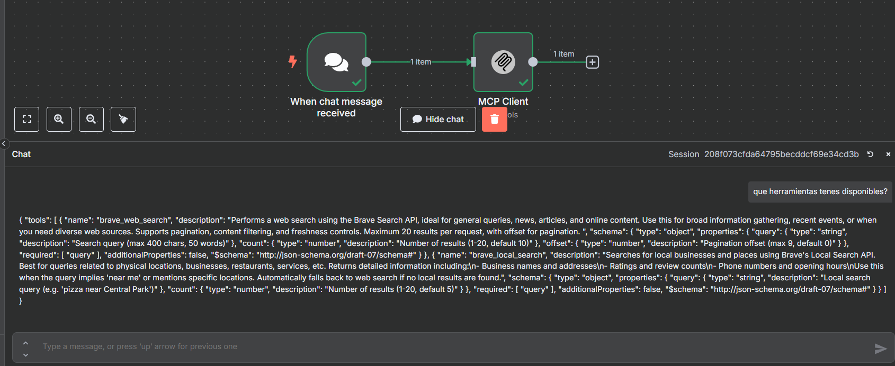
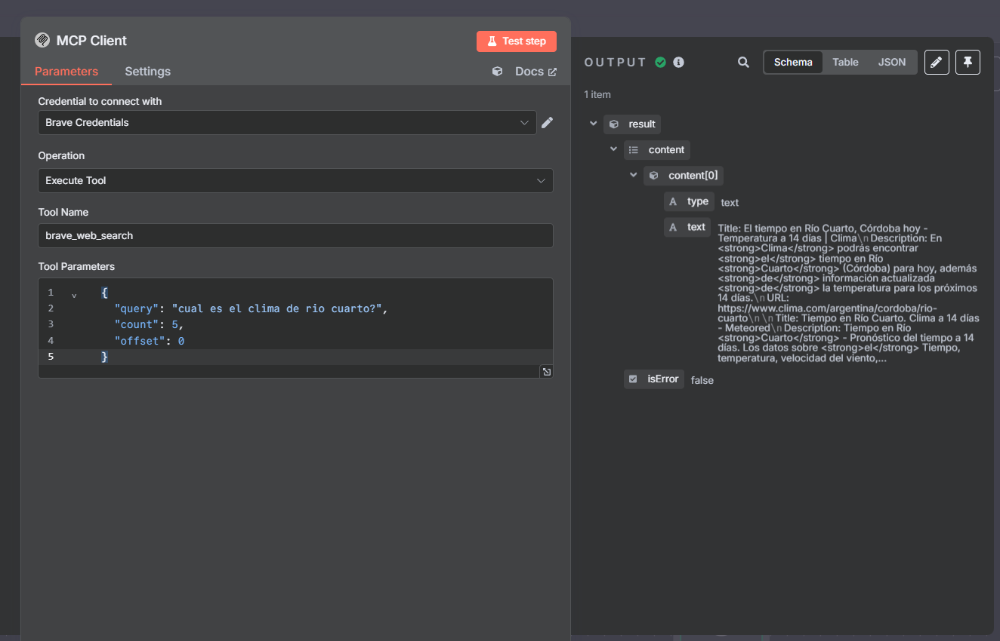

Ejemplo de Integración MCP en n8n
Esta sección describe el proceso para instalar y utilizar los nodos MCP (Model Context Protocol) en n8n, utilizando como ejemplo la conexión con el servicio Brave Search.
1. Instalación de los nodos MCP
Para instalar los nodos MCP desarrollados por la comunidad, se deben seguir los siguientes pasos:
- Acceder a Ajustes en n8n.
- Seleccionar Community Nodes.
- Buscar "n8n-nodes-mcp" y hacer clic en Install.

Figura 1: Instalación del nodo MCP en n8n
Una vez instalado, el nodo MCP estará disponible para ser agregado a los flujos de trabajo.

Figura 2: Nodo MCP disponible en n8n
Nota: Si el nodo no aparece, se recomienda refrescar la página.
2. Configuración de credenciales MCP
Para conectar el nodo MCP con un servicio, es necesario agregar las credenciales correspondientes. La lista de servicios compatibles se encuentra disponible en:
https://github.com/modelcontextprotocol/servers
En este ejemplo, se utilizará Brave Search. Para ello, se debe localizar el servicio en la lista:
https://github.com/modelcontextprotocol/servers/tree/main/src/brave-search
La información obtenida debe ser ingresada en el bloque de configuración del cliente MCP:

Figura 3: Configuración del cliente MCP con credenciales de Brave
Posteriormente, estos datos deben ser cargados en las credenciales del nodo MCP Client en n8n, como se puede observar, necesitamos agregar la API KEY también:

Figura 4: Ingreso de credenciales en n8n para MCP Client
la cual puede obtenerse registrándose en:
https://api-dashboard.search.brave.com/app/keys

Figura 5: Panel de Brave Search para obtener la API Key
3. Pruebas de conexión y uso de herramientas
Para verificar las herramientas disponibles, se puede realizar una consulta desde el nodo MCP:

Figura 6: Consulta de herramientas disponibles en MCP
De igual manera, es posible probar la herramienta de búsqueda de Brave de forma individual:

Figura 7: Ejecución de la herramienta de búsqueda de Brave